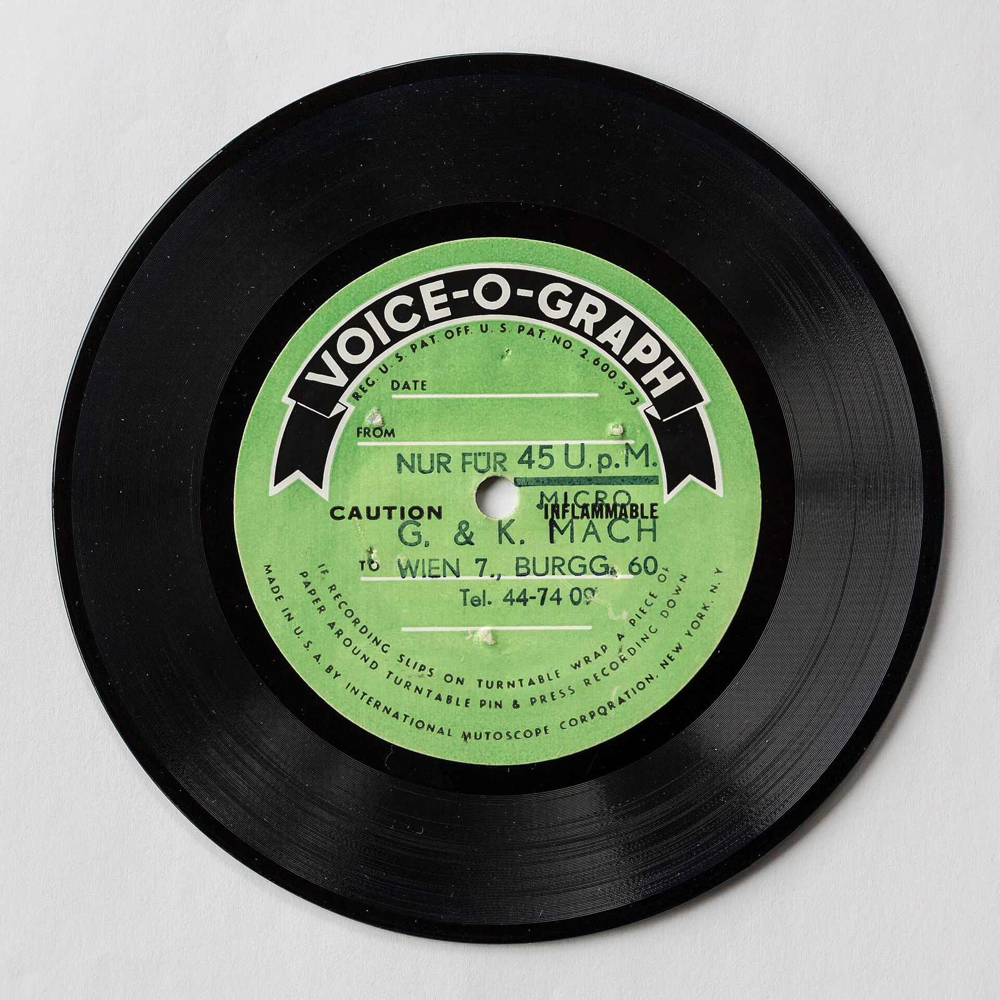
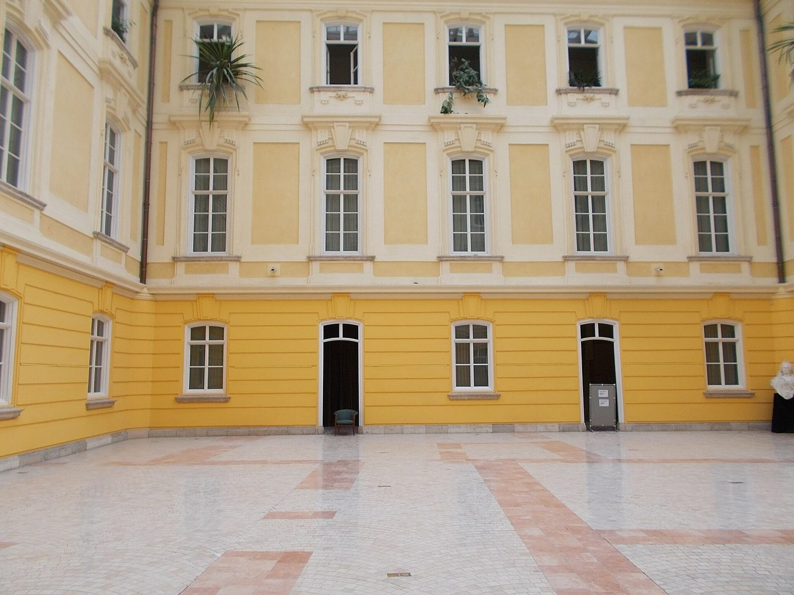
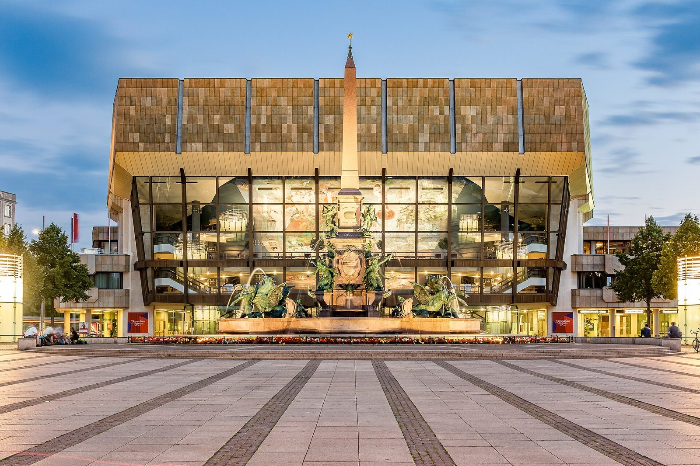
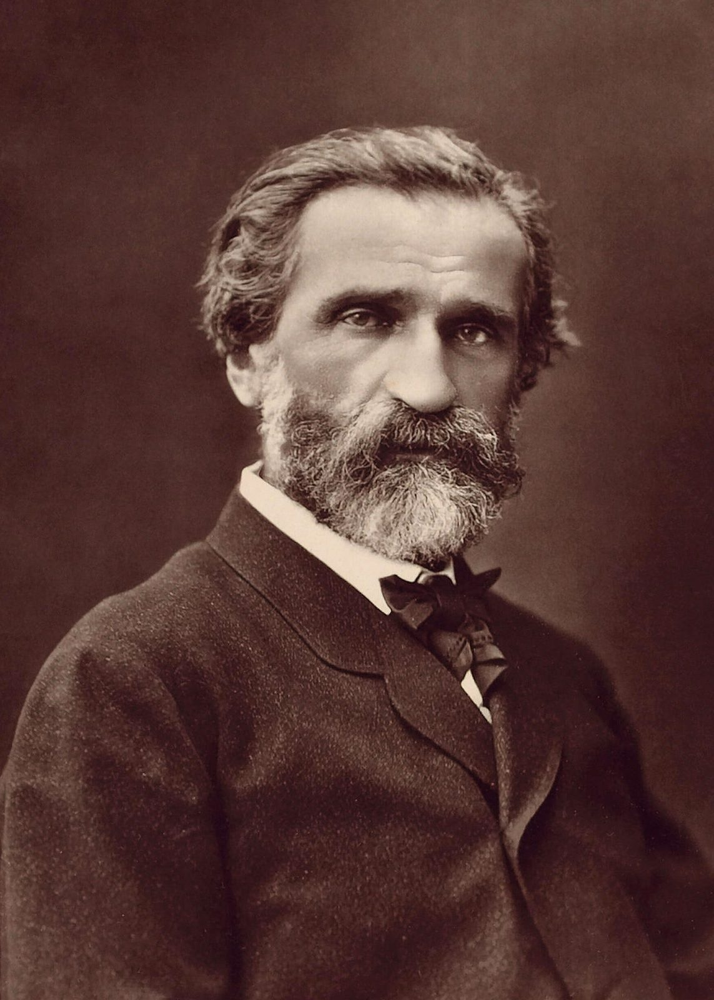
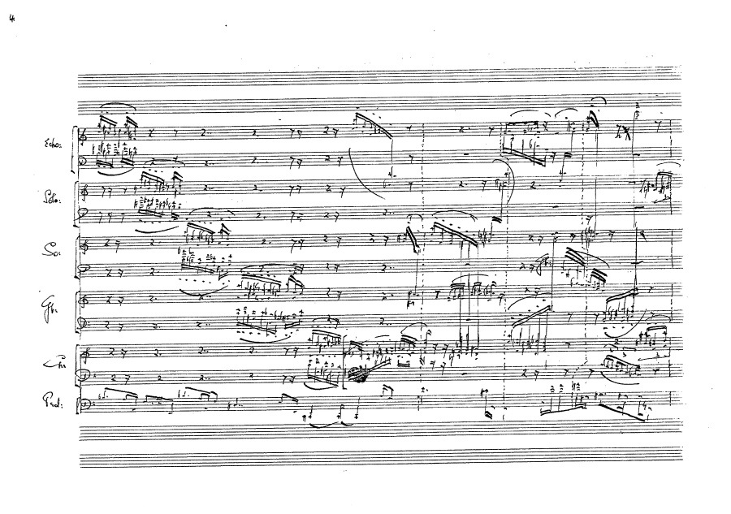
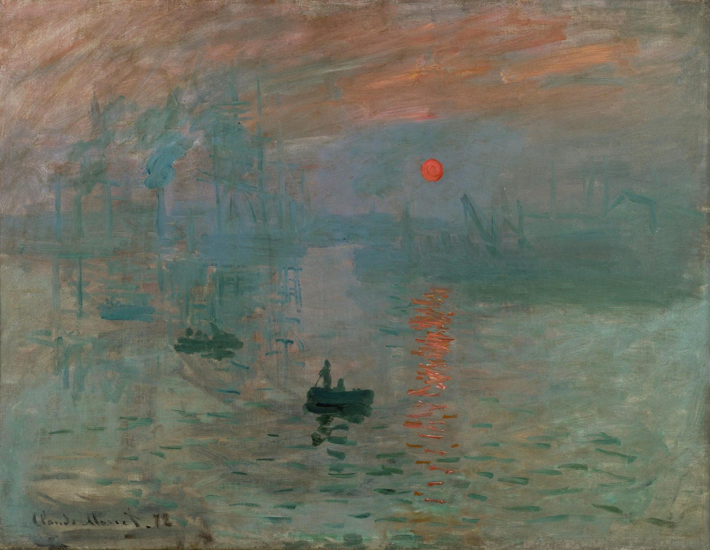
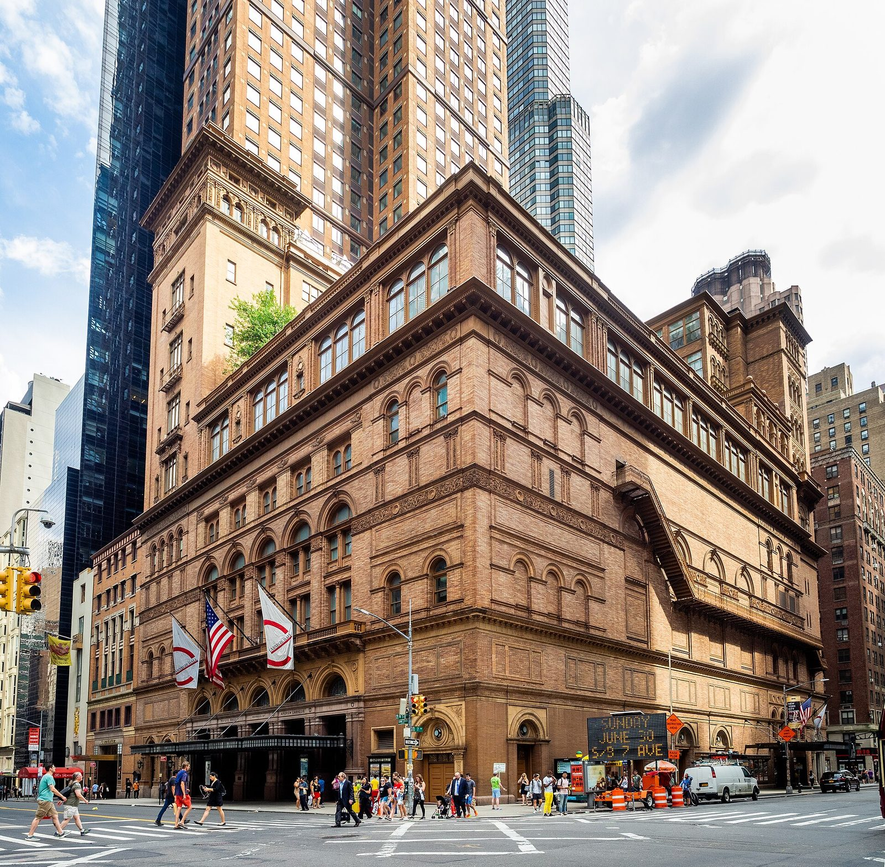
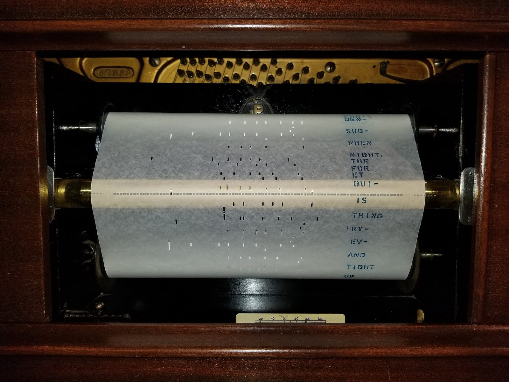
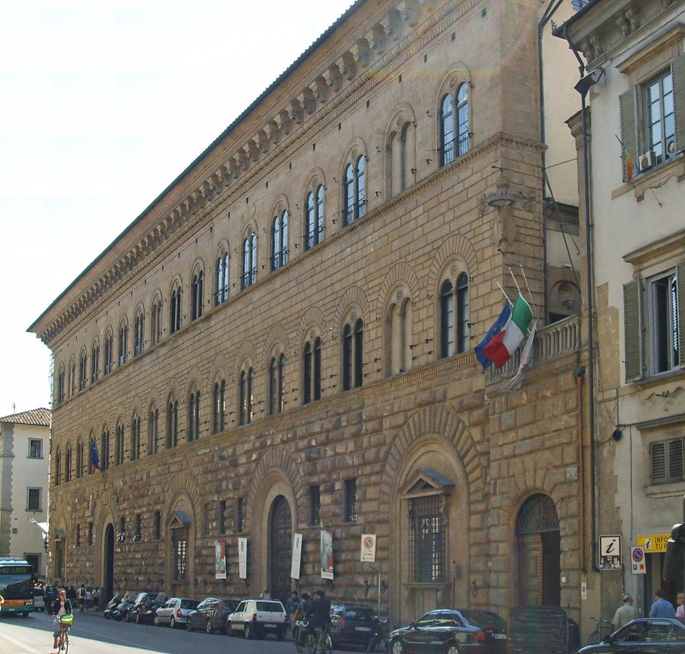

投影片 3
核心命題：音樂塑造國力、國家形象與企業品牌
- 音樂 → 企業：催生出版業、樂器（鋼琴）工業、唱片業、場館經濟、品牌（炫技家＝最早的名人 IP）
- 企業 → 音樂：贊助、委託創作、出資建場館、發明版稅模式、行銷綁定藝術家
- 結論先講：贊助從未消失，只是換了形式

投影片 4
為什麼最頂尖的企業，都贊助藝術？
- 社會聲望：擠進金字塔頂端的文化俱樂部，與菁英、政要同框
- 文化資本：把財富升級成品味與高度，贏得真正的尊重
- 不朽之名：名字刻進文化史，被傳誦數百年
- 品牌差異化：做別人做不到、也買不到的事
- 影響力與人脈：成為藝文、媒體與權力圈的交會點
- 認同與凝聚：最高級的 ESG，凝聚員工與社會向心力
- 定調：贊助藝術不是慈善，是金字塔頂端最高級的聲望投資
投影片 5
四百年時間軸（七個改變遊戲規則的時刻）
- 1501 活字印譜（佩特魯奇 Ottaviano Petrucci，威尼斯）：音樂第一次能「量產複製」
- 1600 歌劇誕生（佛羅倫斯，梅迪奇 Medici 家族贊助）：最早的文化創投
- 1742《彌賽亞 Messiah》都柏林售票首演（韓德爾 Handel）：售票經濟成形
- 1853 史坦威（Steinway & Sons，紐約）：樂器走向工業與品牌
- 1877 留聲機（愛迪生 Edison）：音樂第一次「可儲存、可販售」
- 1901 Victor 建立藝人版稅：藝術家開始分潤
- 1914 ASCAP 成立：版稅制度化、公開演出開始收費
圖片待補
橫向時間軸，七個節點各配一個小圖示（印刷機/歌劇面具/票根/鋼琴/留聲機/唱片/法槌）
投影片 7
同代美術：林布蘭《夜巡》——民兵集資的團體肖像
- 林布蘭（Rembrandt van Rijn）《夜巡》（De Nachtwacht, 1642）
- 甲方＝阿姆斯特丹火槍手民兵隊（Kloveniers）：16 人集資委製、平均每人約 100 盾（guilders）
- 出資越多、畫面位置越顯眼——三百多年前的「贊助曝光版位」
- 同一時代：巴赫領教會薪水、韋瓦第受僱孤兒院——同一套贊助經濟

投影片 8
梅迪奇與歌劇：銀行家發明的文化創投
- 佛羅倫斯卡梅拉塔（Florentine Camerata）：一群想復興古希臘戲劇的文化沙龍
- 佩里（Jacopo Peri）＋里努奇尼（Rinuccini）1598《達芙妮 Dafne》＝最早倖存歌劇
- 1600《尤麗狄切 Euridice》為瑪麗·德·梅迪奇（Marie de'Medici）與法王亨利四世政治聯姻而演
- 演出者含受僱女作曲家兼歌者卡契尼（Francesca Caccini）
- 一句話：歌劇＝銀行家政治權力的品牌延伸

投影片 9
韋瓦第 × 巴赫：兩種「受僱者」的生意經
- 韋瓦第（Antonio Vivaldi）：1703 起在威尼斯皮耶塔孤兒院（Ospedale della Pietà）任小提琴師，為全女子樂團寫曲近 37 年
- 《四季 The Four Seasons》（1725，Op.8）獻給莫爾欽（Morzin）伯爵——獻曲＝古典版的「冠名贊助」
- 巴赫（J.S. Bach）：1723 起在萊比錫聖多馬教堂（Thomaskirche）任樂長 27 年
- 受薪、每週供應新曲＝最早的「訂閱制」宗教音樂
🎬 韋瓦第《四季·春 The Four Seasons: Spring》——Voices of Music 古樂演奏
投影片 10
郭德堡變奏曲：一筆私人委託，換一夜好眠
- 巴赫《郭德堡變奏曲 Goldberg Variations, BWV 988》：1741 出版（《鍵盤練習 Clavier-Übung》第四集），一段詠嘆調（Aria）＋ 30 段變奏
- 傳說（出自福克爾 Forkel 1802 年巴赫傳記；學界存疑——首版無題獻、哥德堡時年僅約 14）：俄國駐薩克森公使凱瑟林克伯爵（Count Keyserlingk）苦於失眠，委託巴赫作曲，由隨行年輕大鍵琴家哥德堡（Johann Gottlieb Goldberg）夜夜彈奏
- 相傳伯爵回贈一只裝滿 100 枚金路易的金杯（僅見於福克爾記載）——史上最貴的「安眠服務」訂單
- 商業視角：私人委託＝極致客製化內容；曲名掛的是付錢一方身邊的名字——被寫進音樂史
- 1955 顧爾德（Glenn Gould）錄音、1956 發行的出道專輯（Columbia）：兩百年前的私人訂單，變成二十世紀的暢銷唱片
🎬 巴赫《郭德堡變奏曲》開頭詠嘆調（Aria）——Netherlands Bach Society（All of Bach）
投影片 11
埃斯特哈齊 × 海頓：私人 R&D 養出交響曲
- 海頓（Joseph Haydn）1761 起受僱埃斯特哈齊（Esterházy）親王尼可勞斯（Nikolaus），長達約 30 年
- 埃斯特哈薩（Esterháza）莊園＝「匈牙利的凡爾賽」：歌劇院、木偶劇場、音樂廳俱全
- 親王愛玩巴里頓琴（baryton），海頓就為它寫了 168 首三重奏——客製化的研發
- 穩定環境讓海頓把交響曲「養成熟」＝企業提案第 1 點的原型

投影片 12
韓德爾：第一位「音樂創業家」
- 韓德爾（George Frideric Handel）1710 移居倫敦，自己當老闆
- 多元收入：安妮女王年金 £200／年 ＋ 與海德格（Heidegger）合夥的商業歌劇公司（King's Theatre 售票）
- 帕斯提奇歐（pasticcio）拼貼舊作降成本——精打細算的營運
- 市場變了就果斷轉型：從義大利歌劇改做英語神劇
- 1742《彌賽亞 Messiah》都柏林售票首演＝長期金雞母，致富獨立
- 關鍵字：多元收入、果斷轉型、擁有自己的 IP
🎬 韓德爾〈哈利路亞 Hallelujah〉——皇家合唱協會（Royal Choral Society）
投影片 13
茶歇與美食：歐式沙龍風（台灣買得到版）
- 中場休息 15 分鐘，請大家像十八世紀的沙龍客人一樣交際
- 茶歇對照：咖啡／紅酒（或無酒精氣泡飲）＋ 起司 ＋ 馬卡龍／可頌
- 哪裡買：超市（咖啡、起司）、烘焙坊（可頌、馬卡龍）、Costco（起司拼盤、氣泡飲）
- 靈魂香氣彩蛋：撒一點孜然（cumin）的烤起司條／孜然杏仁，當作貫穿全場的香料動機
- 道地味的台灣替身：以迪化街南北貨的孜然、夜市烤物攤的孜然香，呼應沙龍的「異國情調」

投影片 15
同代美術：大衛《拿破崙加冕》——國家力量買形象
- 大衛（Jacques-Louis David）《拿破崙加冕》（1805–1807）
- 拿破崙（Napoléon）官方委託；大衛獲任「皇帝首席畫師」——國家級形象工程
- 甲方改稿：缺席的母親被畫進最尊貴的包廂；教皇姿勢應皇帝要求改成祝福
- 大衛自估 10 萬法郎、實收 6.5 萬——贊助方權力不對等的經典教訓

投影片 16
莫札特 vs 貝多芬：兩種「離職創業」的結局
- 莫札特（Mozart, 1756–1791）：原受薩爾茲堡大主教僱用，1781 決裂裸辭闖維也納自由市場
- 收入＝教學／自辦音樂會／接委託／賣譜；1787 約瑟夫二世（Joseph II）只給兼職年薪 800 弗洛林（florin）
- 結局：財務不穩、1791 負債病逝、葬於貧民墓
- 貝多芬（Beethoven, 1770–1827）：1809 拿三位維也納貴族終身年金，唯一條件「留在維也納」
- 收入＝年金 ＋ 公開音樂會 ＋ 教學 ＋ 出版題獻；名利雙收且創作自由
- 對照：同樣是自由身，差別在「有沒有把贊助結構化」
🎬 莫札特《小夜曲 Eine kleine Nachtmusik》——Concertgebouw 室內樂團
投影片 17
題獻的力量：金主如何用年金，買下不朽之名
- 三位金主：金斯基（Kinsky）／洛布科維茨（Lobkowitz）／魯道夫大公（Archduke Rudolph）
- 年金＝穩定底盤；公開音樂會＝爆發收入；教學＝現金流；出版題獻＝聲望變現
- 這套組合＝後世「獨立作曲家」的範本，也是現代自由工作者的多元收入藍圖
- 年金養出的巔峰：1824-05-07《第九號交響曲》維也納首演；倫敦愛樂協會以 £50 委託，出版題獻普魯士國王腓特烈·威廉三世
- 兩百年後的複利：〈歡樂頌 Ode to Joy〉1972 成歐洲理事會會歌、1985 成歐盟盟歌；日本年末「第九」傳統（1918 板東俘虜營日本首演；大阪「萬人第九」由企業冠名贊助）
🎬 貝多芬《第九號交響曲》終樂章〈歡樂頌〉合唱精華——BBC Proms 2015（CBSO／Andris Nelsons）
投影片 18
公開音樂會：門票經濟誕生
- 牛津音樂廳（Holywell Music Room）1748 啟用＝歐洲最早的專用音樂廳之一
- 格萬豪斯（Gewandhaus，萊比錫）1781 啟用，並擁有格萬豪斯管弦樂團
- 門票經濟＝可規模化的商業模式，第一次能「捧紅」作曲家
- 啟示：把體驗票券化，才能讓影響力可複製

投影片 19
出版與鋼琴製造：產業鏈成形
- 出版：Breitkopf & Härtel（萊比錫，1719；Härtel 1795 加入後推「全集 Oeuvres complètes」＝最早的產品線管理）
- 出版：Artaria（維也納，1770）＝樞紐，出版海頓、貝多芬，並兼賣樂器與樂譜
- 鋼琴：Broadwood（英，1773，方形鋼琴＋踏板改良；海頓 1791 用過、貝多芬 1817 獲贈）
- 鋼琴：埃拉爾 Érard（法，1777，發明雙擒縱 double escapement）
- 啟示：硬體＋內容＋通路，一條龍才賺得久
投影片 20
古典代表曲（樂譜頁）
- 聽見「自由接案時代」的均衡與優雅：清晰結構、可被市場記住的旋律
- 現場示意：古典時期主題與變奏

🎼 樂譜頁：d2-classical-melody/piano (full)（譜例待放入；現為佔位）
投影片 22
同代美術：德拉克洛瓦《自由引導人民》——藝術與國族主義
- 德拉克洛瓦（Eugène Delacroix）《自由引導人民》（1830）
- 非委託案：畫家自主創作，1831 年沙龍展出後由法國政府以 3,000 法郎購藏
- 政治訊息太強、一度被收起；1874 年才正式進羅浮宮
- 1978–1995 年印上法國 100 法郎紙鈔——藝術成為國家識別

投影片 23
帕格尼尼與李斯特：最早的搖滾巨星
- 帕格尼尼（Niccolò Paganini, 1782–1840）：小提琴炫技傳奇、最早的商業偶像
- 巡演爆滿、高票價、賣肖像周邊——完整的明星經濟雛形
- 李斯特（Franz Liszt, 1811–1886）：鋼琴炫技偶像，1823 起埃拉爾（Érard）力挺（提供鋼琴＋引介宮廷圈）
- 《帕格尼尼練習曲·鐘 La Campanella》需要雙擒縱才能彈；1840 年代掀起「李斯特狂熱 Lisztomania」
- 商業洞察：樂器商「贊助」明星＝最早的代言行銷
🎬 李斯特《鐘 La Campanella》——Evgeny Kissin 現場（Royal Albert Hall, 1997）
投影片 24
蕭邦 × 普雷耶爾：藝術家與品牌的深度綁定
- 蕭邦（Frédéric Chopin）與普雷耶爾（Pleyel et Cie）深度綁定，盛讚其鋼琴 non plus ultra（無與倫比）
- 巴黎首演與生前最後一場，都在 Salle Pleyel（普雷耶爾廳）
- 品牌與藝術家互相加持：琴成就了蕭邦的音色，蕭邦成就了琴的傳奇
- 啟示：找到「對的」藝術家深度綁定，勝過廣撒贊助
🎬 蕭邦《夜曲 Op.9 No.2》——Seong-Jin Cho（趙成珍）
投影片 25
鋼琴品牌戰（對照表）
- 三大品牌如何用「定位」打天下：高端 vs 規模 vs 全球
- 看數字感受工業化的爆發力
| 品牌 | 國家 | 創立 | 創辦人 | 定位與里程碑 |
|---|
| 普雷耶爾 Pleyel | 法 | 1807 | Ignaz Pleyel | 金屬框；1813 約 50 架/年 → 1866 約 3000 架/年 |
| 貝森朵夫 Bösendorfer | 奧 | 1828 | （維也納） | 1830 獲皇帝御用、高端少量 |
| 史坦威 Steinway & Sons | 美/德 | 1853 | Heinrich/Henry Steinway | 1854 年產 74 架；後設漢堡廠、139 項專利、巡演名家首選 |
投影片 26
里柯第 × 威爾第：出版即版圖
- 里柯第（Casa Ricordi，喬凡尼·里柯第 Giovanni Ricordi，1808 米蘭）
- 1825 買下史卡拉歌劇院（La Scala）樂譜庫＝掌握內容資產
- 1839 起出版威爾第（Giuseppe Verdi），終生合作、雙雙致富
- 掌控羅西尼／董尼采第／貝里尼到威爾第／普契尼——整個義大利歌劇版圖
- 文化壟斷當成商業策略；啟示：擁有並經營你的 IP 版圖＝最強護城河

投影片 27
Funiculì, Funiculà：一首纜車廣告歌的百年生意
- 1880 維蘇威火山纜車（funicolare del Vesuvio）開通；丹薩（Luigi Denza）作曲、記者圖爾科（Peppino Turco）拿坡里語作詞，為宣傳纜車而寫，同年於皮耶迪格羅塔歌謠節（Piedigrotta）發表
- 常被稱為史上最早的「廣告歌」之一：據《義大利人物傳記辭典》（Treccani）記載，一年內樂譜銷量達百萬份
- 由里柯第（Ricordi）出版——又是上一張那位「出版即版圖」的里柯第
- 理查·史特勞斯（Richard Strauss）《義大利之旅 Aus Italien》（1886）誤當拿坡里民謠引用；相傳丹薩因此獲得版稅（「訴訟」之說無文獻可徵）——「版權」的力量，ASCAP 一站會再說
- 1907 林姆斯基-高沙可夫（Rimsky-Korsakov）也誤當民謠，改編成管弦樂《拿坡里歌謠》（Op. 63）——連兩位大師都被「騙」過
- 商業啟示：好內容自帶擴散力，但收得到錢，靠的是出版與版權制度

投影片 28
全場帶動唱：Funiculì, Funiculà（登山纜車）
- 跟我一起唱副歌：「Jamme, jamme, 'ncoppa jamme jà!」（拼讀：亞姆美、亞姆美，恩苦帕・亞姆美・亞！）（另有 Jammo 拼法，以現場歌譜為準）
- 「Funiculì, funiculà!」（拼讀：福尼庫利、福尼庫拉！）＝「纜車上山、纜車下山」的歡呼
- 唱法：講師領唱一次 → 全場跟唱兩次 → 第三次加拍手
- 不用唱準，只要唱開心——一百四十年前的乘客，就是這樣被這首歌「行銷」上山的
🎬 （伴唱／示範）Pavarotti《Funiculì, Funiculà》——官方音源（Official Audio）
投影片 29
拜羅伊特：十九世紀的藝術新創 × 創投
- 華格納（Richard Wagner）為《尼伯龍根的指環 Der Ring des Nibelungen》量身打造專屬劇院
- 1864 巴伐利亞國王路德維希二世（Ludwig II）成金主＝近乎無上限的天使投資人
- 自建拜羅伊特節慶劇院（Bayreuth Festspielhaus），隱藏式下沉樂池＝為作品客製的硬體
- 1874 財務危機，國王再撥 10 萬塔勒（thaler）續命
- 1876/8/13–17 首屆音樂節，完整上演 14 小時四聯劇；與會者含李斯特／柴可夫斯基／聖桑／布魯克納
- 對應企業提案第 3 點：把場館／音樂節做成 iconic 品牌
🎬 華格納〈女武神的騎行 Ride of the Valkyries〉——Metropolitan Opera Orchestra（官方）
投影片 30
浪漫代表曲（樂譜頁）
- 聽見「明星市場時代」的個性與張力：炫技、情感、戲劇性
- 現場示意：浪漫時期旋律與華彩

🎼 樂譜頁：d2-romantic-melody/piano (full)（譜例待放入；現為佔位）
投影片 32
同代美術：莫內《印象・日出》——自辦展覽與畫商創投
- 莫內（Claude Monet）《印象・日出》（Impression, soleil levant, 1872）
- 1874 首屆聯展＝約 30 位落選畫家自組合作社、自辦售票展——藝術新創
- 評論家勒魯瓦（Louis Leroy）借畫名嘲諷「印象派」——罵名變品牌
- 畫商杜朗-魯耶（Durand-Ruel）31 年購藏近 12,000 幅——藝術界的創投

投影片 33
德布西與拉威爾：拒絕標籤的兩位大師
- 德布西（Claude Debussy, 1862–1918）：《牧神的午後前奏曲》《海 La Mer》《月光 Clair de Lune》
- 拉威爾（Maurice Ravel, 1875–1937）：《死公主的孔雀舞》《波麗露 Boléro》
- 兩人都拒絕「印象派」標籤；德布西偏好象徵主義（Symbolism）
- 商業意義：在出版與音樂會之外，「錄音」第一次成為收入新支柱
🎬 拉威爾《波麗露 Boléro》——Rotterdam Philharmonic / Han-Na Chang
投影片 34
留聲機線（時間軸）：音樂變成商品
- 1877 愛迪生（Edison）蠟筒（cylinder）留聲機（最初當口述機、辦公用品）
- 1887 柏林納（Emile Berliner）改平面圓盤（disc）＋母盤壓製，低成本量產（1920s 78 轉成標準）
- 1901 Victor Talking Machine（Eldridge Johnson 創）用「主人的聲音／小狗 Nipper（His Master's Voice）」商標
- 1906 推家用機 Victrola；簽下歌王卡羅素（Enrico Caruso）；建立藝人版稅
- 1897 英 Gramophone；1931 與 Columbia 合併成 EMI（Victor 1929 併入 RCA、共用 HMV 商標）
圖片待補
留聲機演進時間軸，含 Nipper 小狗商標
投影片 35
場館對照：誰出錢蓋了殿堂
- 卡內基音樂廳（Carnegie Hall，紐約，1891）：鋼鐵大王卡內基（Andrew Carnegie）出資
- 香榭麗舍劇院（Théâtre des Champs-Élysées，巴黎，1913）
- 對照命題：企業家出資建殿堂，把名字刻進文化史——最早的「冠名場館」

投影片 36
自動鋼琴與 ASCAP：熱潮 vs 護城河
- 自動鋼琴（player piano）＝串流前一百年的家庭娛樂主角，靠紙捲（music rolls）播放
- Welte-Mignon（1904，德）能重現名家觸鍵；1914 銷量超越一般鋼琴
- 1929 股災＋廣播與唱片夾擊，迅速退場——啟示：熱潮 ≠ 護城河，技術迭代會淘汰昨日贏家
- 1914 ASCAP（美國作曲家、作家與出版商協會）成立，向公開演出收費＝版稅制度化

投影片 37
印象派代表曲（樂譜頁）
- 聽見「氛圍時代」的色彩與流動：模糊調性、踏板朦朧、如水般的觸鍵
- 印象派代表（鋼琴獨奏）：德布西《月光 Clair de Lune》；不能演唱，作暖場／散場墊樂
🎬 德布西《月光 Clair de Lune》——Khatia Buniatishvili（備援，現場演奏者臨時無法上場時播放）
🎼 樂譜頁：d2-impressionism-melody/piano (full)（譜例待放入；現為佔位）
投影片 39
同代美術：梵谷《星夜》——一個人的贊助
- 梵谷（Vincent van Gogh）《星夜》（1889）——繪於聖雷米療養院
- 弟弟西奧（Theo van Gogh）＝畫商＋終身贊助人：按月匯款資助
- 西奧：「我把給他的錢，視為他工作的報酬」——對等，不是施捨
- 生前未售出；1941 年經遺贈入藏紐約現代藝術博物館（MoMA）

投影片 40
歷代贊助模式對照（總表）
- 五個時代、五種商業模式，本質都是「誰出錢買藝術、換到什麼」
| 時代 | 主要金主 | 藝術家身分 | 變現／產業 |
|---|
| 巴洛克 | 教會與宮廷 | 受僱者 | 起步的出版 |
| 古典 | 貴族年金＋大眾 | 自由接案 | 公開音樂會 |
| 浪漫 | 市場（明星） | 名人品牌 | 鋼琴出版工業 |
| 印象派 | 沙龍＋唱片 | 版稅收益 | 留聲機工業 |
| 現代 | 企業贊助 | 多元收入 | 串流授權 |
投影片 41
音樂的力量：塑造國力、國家形象與企業品牌
- 國力：威爾第凝聚四分五裂的義大利，成為民族魂與獨立暗號
- 國家形象：普契尼塑造日本與義大利觀光；德布西寫下法國的浪漫
- 企業品牌：賓士借蕭邦的貴族感；奇美用名琴把冷電子變藝術
- 核心金句：音樂是國家與企業形象最高級的化妝術
投影片 42
威爾第：用音樂，創造義大利的國力
- 十九世紀義大利四分五裂、國勢衰弱；威爾第歌劇讓全民因音樂而振奮
- 《那布果 Nabucco》〈Va, pensiero〉（希伯來奴隸大合唱）成復興運動非官方國歌
- 「Viva VERDI」＝Vittorio Emanuele Re D'Italia，獨立的政治暗號
- 一個作曲家，凝聚了一個尚未統一的國家
🎬 威爾第〈Va, pensiero〉——皇家歌劇院合唱團（Royal Opera Chorus，倫敦屋頂演出）
投影片 43
國家形象，是作曲家替它寫的（普契尼／德布西）
- 普契尼→觀光：《蝴蝶夫人》長崎哥拉巴園「蝴蝶夫人之家」年訪客近 200 萬；《托斯卡》羅馬；托雷德爾拉戈普契尼音樂節
- 德布西→法國浪漫：若無印象派《月光》《海》《牧神的午後》，法國的浪漫想像就不完整
- 國家形象，是作曲家替它寫的
投影片 44
音樂，重塑企業的品牌形象（賓士／奇美）
- 賓士×蕭邦：蕭邦的貴族氣質→以夜曲烘托精品車，「擁有＝身分提升」（行銷示意）
- 奇美×許文龍：世界最多名琴收藏＋奇美博物館＋免費出借（曾宇謙、馬友友）→冷電子變藝術品牌
- 音樂＝企業形象最高級的化妝術
投影片 45
佛瑞與女伯爵：贊助者，因藝術而不朽
- 葛雷夫勒女伯爵（Comtesse Greffulhe）在佛瑞掙扎成名時引他入巴黎社交圈
- 佛瑞《帕凡舞曲 Pavane》(1887) 題獻給她、為她的沙龍而寫
- 她讓佛瑞專心創作；佛瑞（與普魯斯特）讓世人永遠記得她
- 贊助者因此創造了「自我的歷史價值」
🎬 佛瑞《帕凡舞曲 Pavane, Op.50》——法國國家管弦樂團（Orchestre National de France）
投影片 46
企業的回報：贊助藝術，買到錢買不到的東西
- 品牌聲望與差異化 ← 像卡內基與拜羅伊特：把名字刻進文化史、打造非朝聖不可的聖地
- 客戶體驗行銷與關係 ← 像 Victor × 卡羅素：獨家內容、錄音與體驗，深化高價值客群
- 人才吸引與員工凝聚 ← 像埃斯特哈齊 × 海頓：長期養才＋私人 R&D，凝聚內部認同
- ESG／CSR 與稅務 ← 像梅迪奇與沙龍：文化贊助＝社會責任與聲望（稅務優惠依文化藝術相關法規評估，建議洽會計師）
- 記憶金句：不是成本，是會增值的長期資產
投影片 47
給企業的五點提案（一）
- 第 1 點 像埃斯特哈齊：長期穩定資助 ＋ 用場館養創新（給藝術家一個能安心研發的家）
- 第 2 點 像 Victor：綁定有品牌的藝術家，做獨家內容／錄音／體驗
- 第 3 點 像拜羅伊特：把場館／音樂節做成 iconic 品牌（差異化的聖地）
投影片 48
給企業的五點提案（二）
- 第 4 點 用科技放大：串流／數位演出／線上教學 ＋ 對等的版稅／授權結構
- 第 5 點 像梅迪奇與路德維希二世：委創新作，換取聲望與差異化
- 三個記憶點：對等、可持續、共融
投影片 49
當代委創（樂譜頁）：今天輪到你當金主
- 從梅迪奇到你的品牌：委託一部新作品，就是把名字寫進未來的文化史
- 現場示意：當代鋼琴新作片段

🎼 樂譜頁：d2-modern-piano (full)（譜例待放入；現為佔位）
投影片 50
重點回顧：四百年一句話
- 巴洛克＝受僱、古典＝接案、浪漫＝明星、印象派＝唱片、現代＝串流
- 不變的真理：每一個偉大的音樂時代，背後都站著一個願意投資美的金主
- 橋是雙向的——你投資音樂，音樂也會回頭塑造你的品牌
投影片 51
行動呼籲：成為下一個梅迪奇
- 你不需要是國王，只需要做一件「對等、可持續、共融」的事
- 今天就可以開始：找一位對的藝術家，提一個小小的委創

投影片 52
Q&A 與延伸聆聽
- 歡迎提問：你的品牌可以對應哪一種歷史贊助模式？
- 延伸聆聽清單：巴赫《郭德堡變奏曲》、貝多芬《第九號交響曲》〈歡樂頌〉、丹薩《Funiculì, Funiculà》、李斯特《鐘》、拉威爾《波麗露》、德布西《月光》
- 延伸場館：卡內基音樂廳、拜羅伊特節慶劇院、Salle Pleyel、奇美博物館
🎬 德布西《月光 Clair de Lune》——Khatia Buniatishvili（散場墊樂）